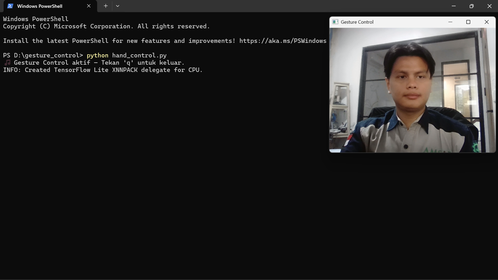
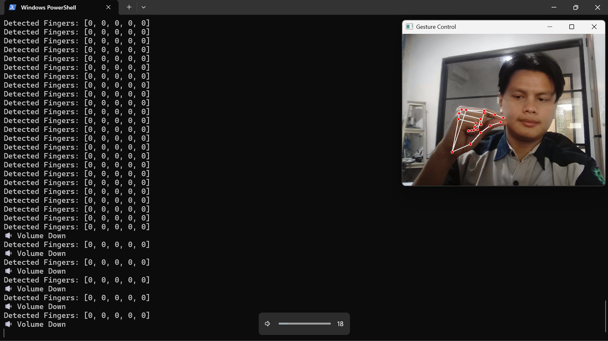
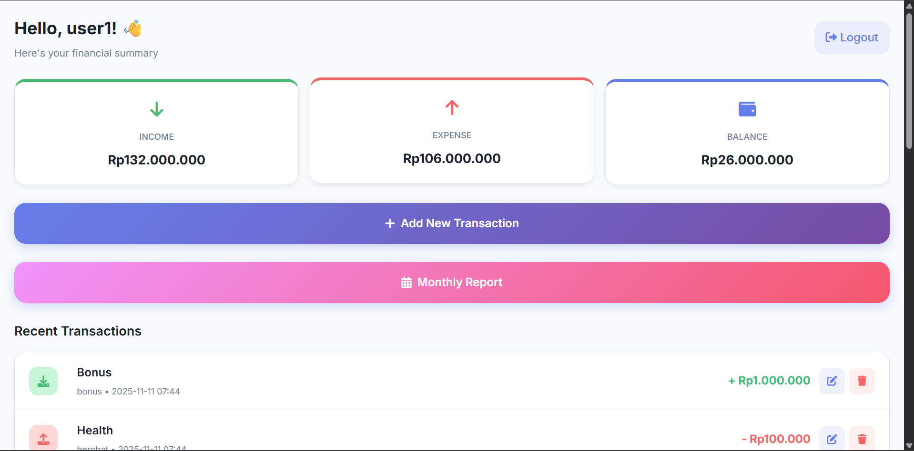

Proyek Unggulan
Kartu project dibuat ringkas. Klik salah satu untuk melihat screenshot, fitur, tech stack, dan link lengkap.
Hand Gesture Media Control
Script Python yang memanfaatkan deteksi gerakan tangan melalui kamera untuk mengontrol pemutaran media pada komputer (Play/Pause, Next/Prev Track, Volume). Proyek ini menunjukkan kemampuan saya dalam integrasi Computer Vision dengan fungsi sistem operasi.

 Deteksi Tangan
Deteksi Tangan

Kontrol Media Implementasi
Implementasi
Fitur Utama:
- Play/Pause media dengan gesture tangan
- Kontrol track berikutnya/sebelumnya
- Kontrol volume dengan gesture
- Deteksi tangan real-time
Cara Kerja:
Kamera mendeteksi gerakan tangan
MediaPipe memproses gesture
PyAutoGUI mengirim command ke sistem
Portfolio Website
Website portfolio pribadi yang responsif dan modern, dibangun dengan HTML, CSS, dan JavaScript vanilla untuk menampilkan proyek-proyek dan kemampuan saya.

Fitur:
- Desain Responsif Penuh
- Tema Gelap Modern
- Animasi Halus
- Loading Cepat
Expense Tracker
Aplikasi web manajemen keuangan pribadi yang komprehensif untuk membantu pengguna melacak pemasukan, pengeluaran, dan anggaran dengan kalkulasi real-time dan grafik interaktif.

Fitur Utama:
- Pelacakan pemasukan & pengeluaran
- Grafik interaktif & analitik
- Sistem kategori pintar
- Persistensi data lokal